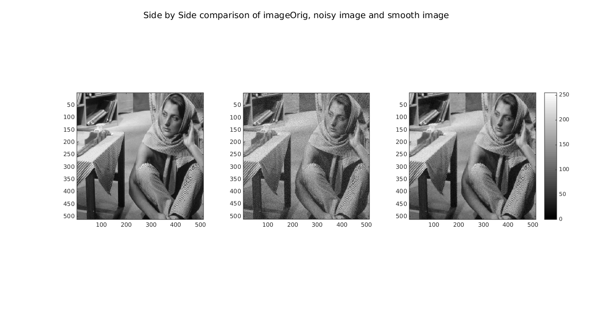
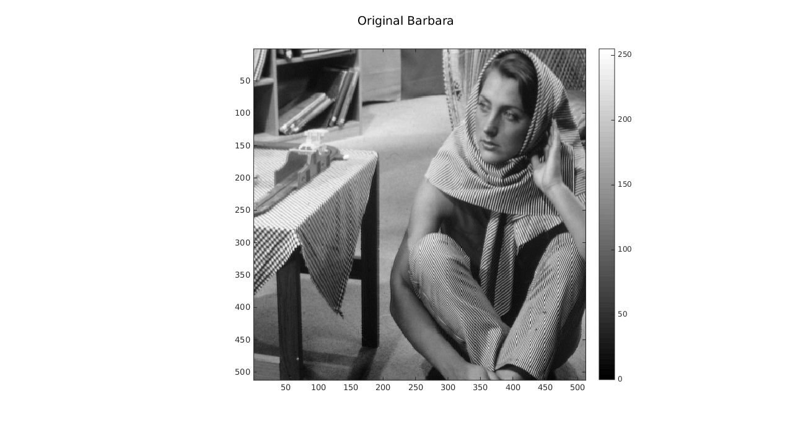
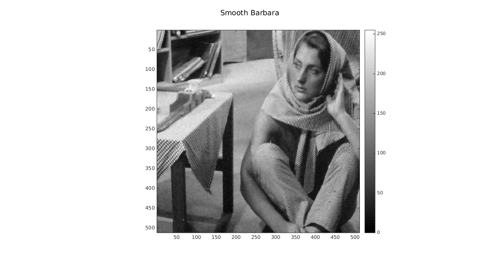
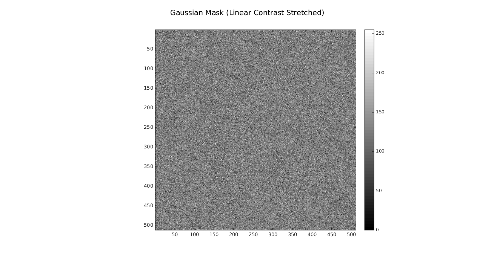
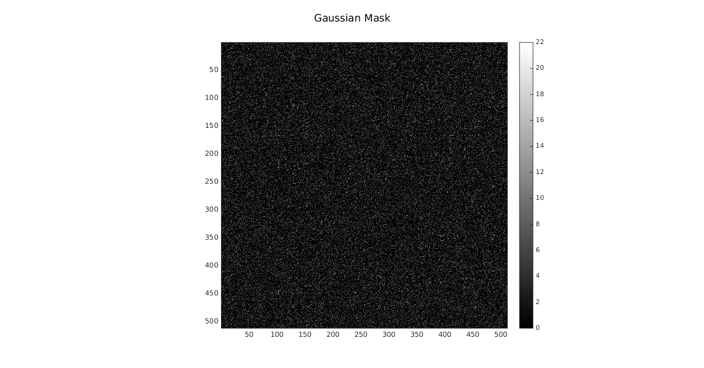

Edge-preserving Smoothing using Bilateral Filtering
Objective
- Adding gaussian noise in the image
- Applying bilateral filter to smoothen out image
- Minimize Root Mean Square Distance
Contents
Original Image and parameter
% Image is loaded in variable imageOrig addpath('../../common') load '../data/barbara.mat' [rows, cols] = size(imageOrig); window_size = 9; sigmaD = 1.43489; sigmaR = 9.9; noisy_image = myGaussianNoiser(imageOrig); gaussian_mask = noisy_image - imageOrig;
Generating noise and smoothening image
Window size: 9, sigmaD: 3, sigmaR: 9
tic; bilateral_filtered_image = myBilateralFiltering(noisy_image,... window_size, sigmaD, sigmaR); elapsed_time = toc; if elapsed_time > 300 save('../images/barbara_smooth.mat', 'bilateral_filtered_image'); end
Smoothen Image
stretched_orig = myLinearContrastStretching(imageOrig); stretched_noisy = myLinearContrastStretching(noisy_image); stretched_bilateral = myLinearContrastStretching(bilateral_filtered_image); show_images = zeros(rows, cols, 3); show_images(:, :, 1) = stretched_orig; show_images(:, :, 2) = stretched_noisy; show_images(:, :, 3) = stretched_bilateral; myShowImages(show_images,... 'Side by Side comparison of imageOrig, noisy image and smooth image'); show_images = zeros(rows, cols, 1); show_images(:, :, 1) = stretched_orig; myShowImages(show_images, 'Original Barbara'); show_images = zeros(rows, cols, 1); show_images(:, :, 1) = stretched_noisy; myShowImages(show_images, 'Noisy Barbara'); show_images = zeros(rows, cols, 1); show_images(:, :, 1) = stretched_bilateral; myShowImages(show_images, 'Smooth Barbara');  
Gaussian Mask
show_images = zeros(rows, cols, 1); show_images(:,:,1) = myLinearContrastStretching(gaussian_mask); myShowImages(show_images, 'Gaussian Mask (Linear Contrast Stretched)'); show_images = zeros(rows, cols, 1); show_images(:, :, 1) = gaussian_mask; myShowImages(show_images, 'Gaussian Mask'); 
Optimal Parameters
rmsd_with_noised_image = myRMSDofImage(imageOrig, noisy_image); Optimal_RMSD = myRMSDofImage(imageOrig, bilateral_filtered_image); disp(['RMSD with noised image = ' num2str(rmsd_with_noised_image)]); disp(['Optimal RMSD with smoothen image = ' num2str(Optimal_RMSD)]); disp(['Optimal sigmaD = ' num2str(sigmaD)]); disp(['Optimal sigmaR = ' num2str(sigmaR)]);
RMSD with noised image = 4.9952 Optimal RMSD with smoothen image = 3.2881 Optimal sigmaD = 1.4349 Optimal sigmaR = 9.9
Tweaked Parameters
- 0.9 * sigmaD and sigmaR *
sigmaDNew = 0.9 * sigmaD; tic; bilateral_filtered_image_1 = myBilateralFiltering(noisy_image,... window_size, sigmaDNew, sigmaR); elapsed_time = toc; if elapsed_time > 300 save('../images/barbara_1.mat', 'bilateral_filtered_image_1') end new_rmsd = myRMSDofImage(imageOrig, bilateral_filtered_image_1); disp(['RMSD with 0.9sigmaD and sigmaR = ' num2str(new_rmsd)]);
RMSD with 0.9sigmaD and sigmaR = 3.294
- 1.1 * sigmaD and sigmaR *
sigmaDNew = 1.1 * sigmaD; tic; bilateral_filtered_image_2 = myBilateralFiltering(noisy_image,... window_size, sigmaDNew, sigmaR); elapsed_time = toc; if elapsed_time > 300 save('../images/barbara_2.mat', 'bilateral_filtered_image_2') end new_rmsd = myRMSDofImage(imageOrig, bilateral_filtered_image_2); disp(['RMSD with 1.1sigmaD and sigmaR = ' num2str(new_rmsd)]);
RMSD with 1.1sigmaD and sigmaR = 3.2893
- sigmaD and 0.9 * sigmaR *
sigmaRNew = 0.9 * sigmaR; tic; bilateral_filtered_image_3 = myBilateralFiltering(noisy_image,... window_size, sigmaD, sigmaRNew); elapsed_time = toc; if elapsed_time > 300 save('../images/barbara_3.mat', 'bilateral_filtered_image_3') end new_rmsd = myRMSDofImage(imageOrig, bilateral_filtered_image_3); disp(['RMSD with sigmaD and 0.9sigmaR = ' num2str(new_rmsd)]);
RMSD with sigmaD and 0.9sigmaR = 3.313
- sigmaD and 1.1 * sigmaR *
sigmaRNew = 1.1 * sigmaR; tic; bilateral_filtered_image_4 = myBilateralFiltering(noisy_image,... window_size, sigmaD, sigmaRNew); elapsed_time = toc; if elapsed_time > 300 save('../images/barbara_4.mat', 'bilateral_filtered_image_4') end new_rmsd = myRMSDofImage(imageOrig, bilateral_filtered_image_4); disp(['RMSD with sigmaD and 1.1sigmaR = ' num2str(new_rmsd)]);
RMSD with sigmaD and 1.1sigmaR = 3.3008